DataBase Assignment 2
| Name | Student ID |
|---|---|
| Lee Kin Yip | 20122166 |
| Tan Fan Hwa | 20108211 |
| Fu Zi Jie | 20102358 |
| Ng Yao Hong | 20107125 |
How to use our website.
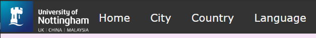
This is an image of the top navigation bar.
Home - is to return to this page.City - is to access the City Database.
Country - is to access the Country Database.
Language - is to access the Language Database.
UNMC Logo - is to go to the Nottingham Malaysia Home Page.
This is the City Database Page.
Go to>> Insert Query Edit Delete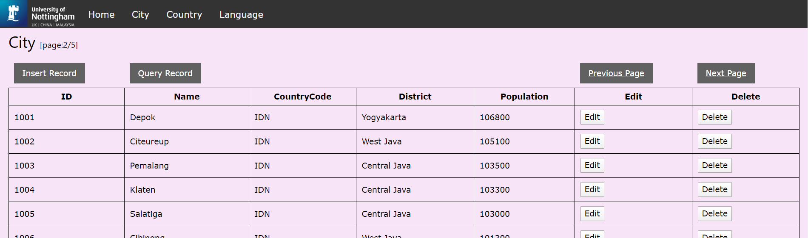
Insert Record Button
This will trigger a popup when clicked that allows you to insert new information to the data. Click on the cross on the top rigth of the popup to cancel the Insert.The pop up will look like this :
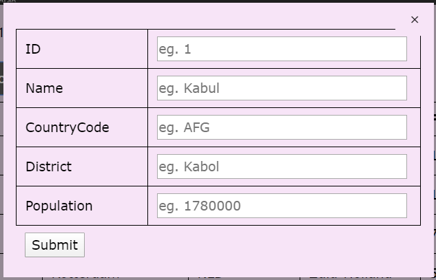
Then key in your information in the correct fields and click on submit. If it was successful this tab will popup:
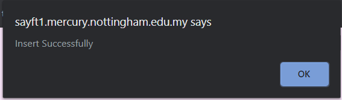
If it fails this will popup:
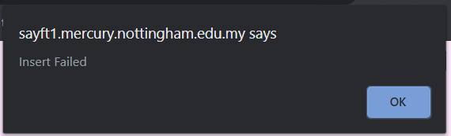
Query Record Button
This triggers a popup when clicked that allows you to insert keywords to find in the DataBase. Click on the cross on the top rigth of the popup to cancel the Query.The pop up will look like this :
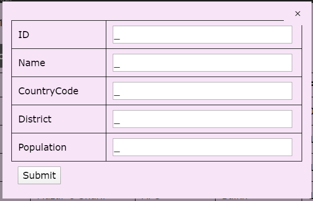
If it was data was found this page will open and the page will tell you the number of results found:
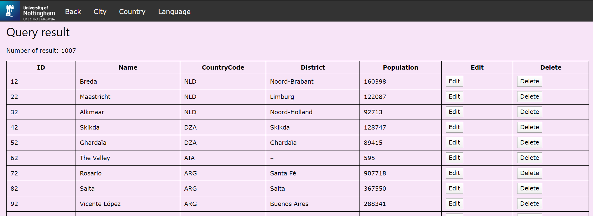
If there is no data that contains any of the keywords the page will tell you there is no results and it will look like this:
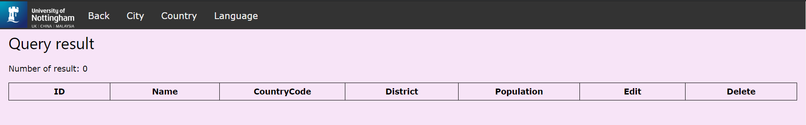
To go back to the City DataBase click on the back button that is located in the top navigation bar on the left corner of the page.
Edit Button
This opens a page with the data of the line you click edit on.The page will look like this :
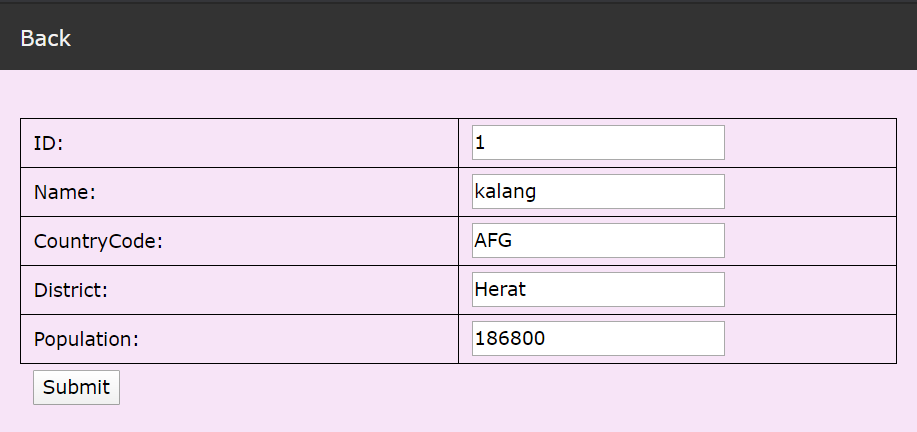
Then key in your information in the correct fields and click on submit. There will be a popup that says Edited Successfully:
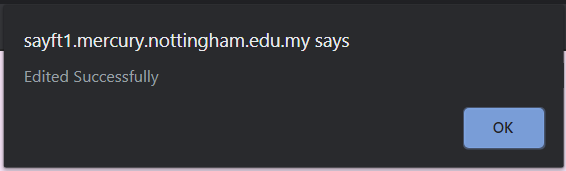
Delete Button
If you don't want the data you can click on the delete button to remove it from the database.There will be a popup if the data was deleted.
The popup looks like this:
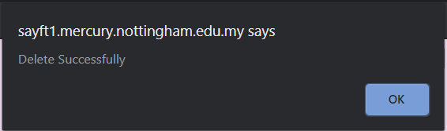
Next & Previous Page Button
Each page can only display 1000 data. Therefore, there is a Next and Previous Page Button to show other data.This is the Country Database Page.
Go to>> Insert Query Edit Delete
Insert Record Button
This will trigger a popup when clicked that allows you to insert new information to the data. Click on the cross on the top right of the popup to cancel the Insert.The pop up will look like this :

Then key in your information in the correct fields and click on submit. If it was successful this tab will popup:
If it fails this will popup:
Query Record Button
This triggers a popup when clicked that allows you to insert keywords to find in the DataBase. Click on the cross on the top right of the popup to cancel the Query.The pop up will look like this :

If it was data was found this page will open and the page will tell you the number of results found:

If there is no data that contains any of the keywords the page will tell you there is no results and it will look like this:

To go back to the City DataBase click on the back button that is located in the top navigation bar on the left corner of the page.
Edit Button
This opens a page with the data of the line you click edit on.Click back on the top navigation bar to go back button to the country database page. The page will look like this :

Then key in your information in the correct fields and click on submit. There will be a popup that says Edited Successfully:
Click back on the top navigation bar to go back button to the country database page.
Delete Button
If you don't want the data you can click on the delete button to remove it from the database.There will be a popup if the data was deleted.
The popup looks like this:
This is the Language Database Page.
Go to>> Insert Query Edit Delete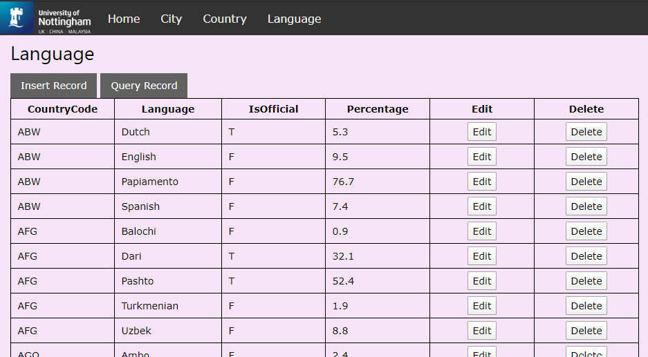
Insert Record Button
This will trigger a popup when clicked that allows you to insert new information to the data. Click on the cross on the top right of the popup to cancel the Insert.The pop up will look like this :
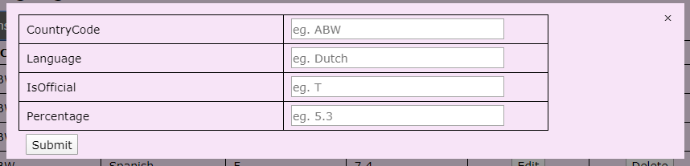
Then key in your information in the correct fields and click on submit. If it was successful this tab will popup:
If it fails this will popup:
Query Record Button
This triggers a popup when clicked that allows you to insert keywords to find in the DataBase. Click on the cross on the top right of the popup to cancel the Query.The pop up will look like this :
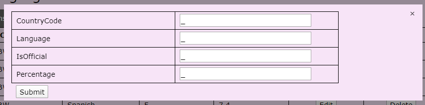
If it was data was found this page will open and the page will tell you the number of results found:
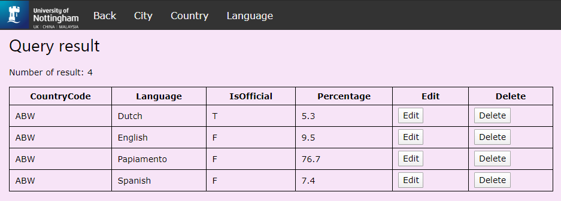
If there is no data that contains any of the keywords the page will tell you there are no results and it will look like this:
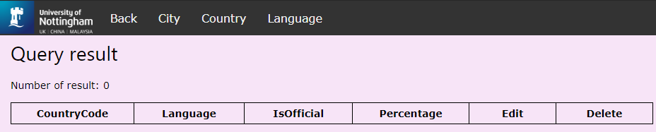
To go back to the City DataBase click on back button that is located in the top navigation bar on the left corner of the page.
Edit Button
This opens a page with the data of the line you click edit on.Click back on the top navigation bar to go back button to the country database page. The page will look like this :
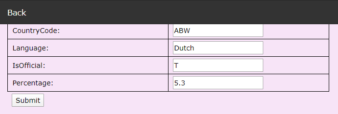
Then key in your information in the correct fields and click on submit. There will be a popup that says Edited Successfully:
Click back on the top navigation bar to go back button to the country database page.
Delete Button
If you don't want the data you can click on the delete button to remove it from the database.There will be a popup if the data was deleted.
The popup looks like this: